27 equations — 27 machine-verified, 0 flagged. Green = verified, amber = flagged (still shows best LaTeX + source crop).
| # | ID | Status | Rendered (KaTeX) | Source crop (PDF) |
|---|---|---|---|---|
| 1 | II-5-1 | single_verified | $$C ^ { 2 } \ = \ { \frac { g } { k } } \ \operatorname { t a n h } ( k h )$$ | 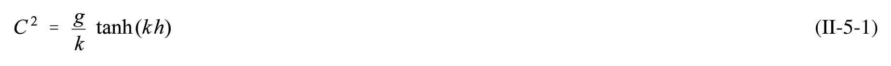 |
| 2 | II-5-2 | single_verified | $$L \ = \ { \frac { g T ^ { 2 } } { 2 \pi } } \ \operatorname { t a n h } \ ( k h )$$ | 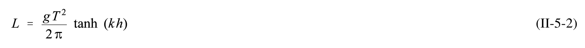 |
| 3 | II-5-3 | agreed | $$u \, = \, { \frac { a g k } { \sigma } } \, { \frac { \cosh \, k ( h + z ) } { \cosh k h } } \, \sin ( k x - \sigma t )$$ | 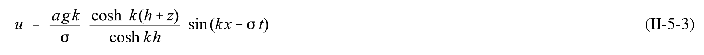 |
| 4 | II-5-4 | agreed | $$w \ = \ - \ \frac { a g k } { \sigma } \ \frac { \sinh \ k ( h + z ) } { \cosh k h } \ \cos ( k x - \sigma t )$$ | 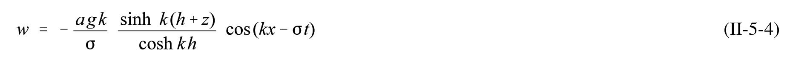 |
| 5 | II-5-5 | agreed | $$C = \sqrt{gh}$$ | 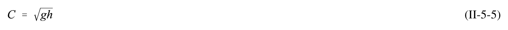 |
| 6 | II-5-6 | agreed | $$L \ = \ T \sqrt { g h }$$ | 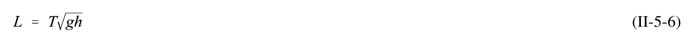 |
| 7 | II-5-7 | agreed | $$F_g = f \frac{m_1 \ m_2}{r^2}$$ | 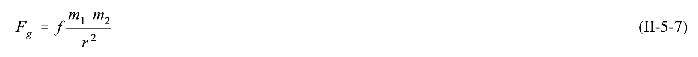 |
| 8 | II-5-8 | agreed | $$f = g \frac{a^2}{E}$$ | 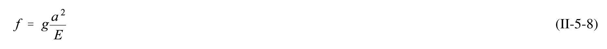 |
| 9 | II-5-9 | single_verified | $$V _ { M } = \frac { f M } { r _ { M X } } \qquad , \qquad V _ { S } = \frac { f S } { r _ { S X } }$$ | 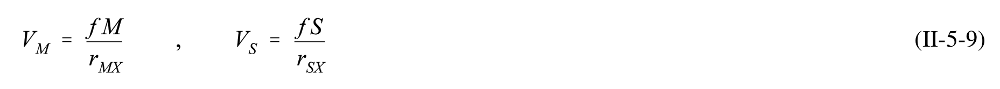 |
| 10 | II-5-10 | agreed | $$\vec{b}_X = \nabla \left[ V_M(X) + V_S(X) \right]$$ | 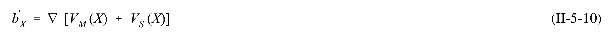 |
| 11 | II-5-11 | agreed | $$\vec{\nabla} = (\partial_{\overline{\partial x}} + \partial_{\overline{\partial y}} + \partial_{\overline{\partial z}})$$ | 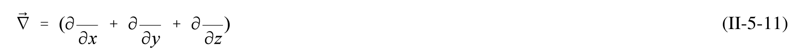 |
| 12 | II-5-12 | agreed | $$V_{M} = fM \left[ \frac{1}{r_{MX}} - \frac{1}{r_{M}} - \frac{a \cos \theta_{MX}}{r_{M}^{2}} \right]$$ | 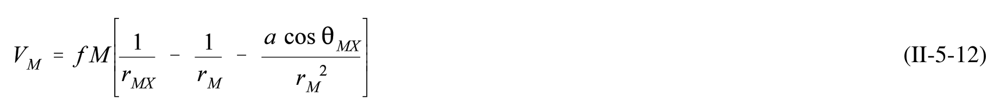 |
| 13 | II-5-13 | agreed | $$V_{S} = fS \left[ \frac{1}{r_{SX}} - \frac{1}{r_{S}} - \frac{a\cos\theta_{SX}}{r_{S}^{2}} \right]$$ | 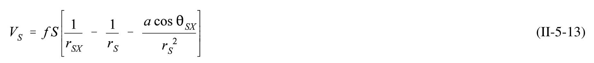 |
| 14 | II-5-14 | agreed | $$V_{M} = fM \left(\frac{a^{2}}{r_{M}^{3}}\right) P_{M}$$ | 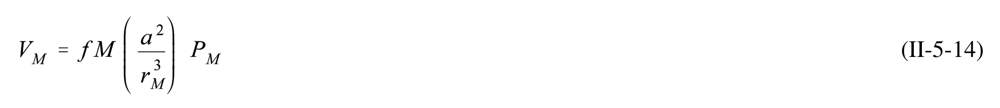 |
| 15 | II-5-15 | agreed | $$V_S = fS\left(\frac{a^2}{r_S^3}\right) P_S$$ | 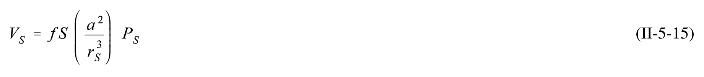 |
| 16 | II-5-16 | agreed | $$H(t) = H_0 + \sum_{n=1}^{N} f_n H_n \cos \left[ a_n t + (V_0 + u)_n - \kappa_n \right]$$ | 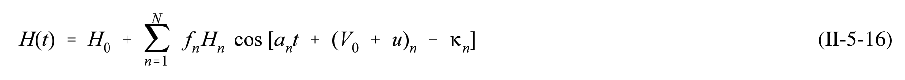 |
| 17 | II-5-17 | single_verified | $$(t_0) = local(t_0) + \frac{S}{15}$$ | 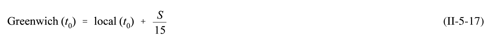 |
| 18 | II-5-18 | agreed | $$\mathrm { l o c a l } \ \left( V _ { 0 } \ + \ u \right) \ = \ \mathrm { G r e e n w i c h } \ \left( V _ { 0 } \ + \ u \right) \ - \ p L$$ | 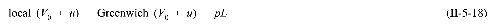 |
| 19 | II-5-19 | agreed | $$H(t)_{local} = H_0 + \sum_{n=1}^{N} f_n H_n \cos \left[ a_n t + \text{Greenwich } V_0 + u \right) - pL + \frac{a_n S}{15} - \kappa_n$$ | 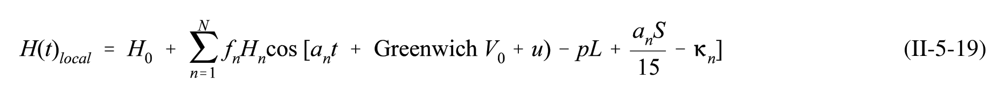 |
| 20 | II-5-20 | single_verified | $$\kappa' = \kappa + pL - \frac{aS}{15}$$ | 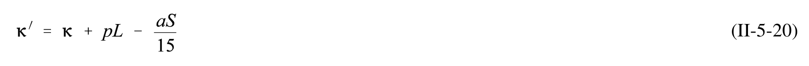 |
| 21 | II-5-21 | single_verified | $$H(t)_{local} = H_0 + \sum_{n=1}^{N} f_n H_n \cos [a_n t + \text{Greenwich} (V_0 + u) - \kappa_n]$$ | 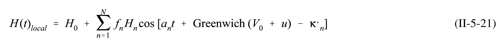 |
| 22 | II-5-22 | agreed | $$R = \frac{A(K_1) + A(O_1)}{A(M_2) + A(s_2)}$$ | 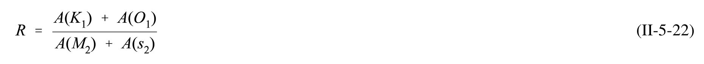 |
| 23 | II-5-23 | agreed | $$R \ = \ \frac { A ( K _ { 1 } ) \ + \ A ( O _ { 1 } ) } { A ( M _ { 2 } ) \ + \ A ( s _ { 2 } ) } \ = \ \frac { 0 . 3 1 9 \ + \ 0 . 1 7 2 } { 2 . 1 5 1 \ + \ 0 . 4 4 8 } \ = \ 0 . 1 8 9$$ | 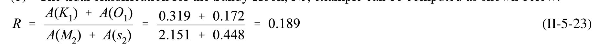 |
| 24 | II-5-24 | agreed | $$f = f _ { D } f _ { R } f _ { \theta } f _ { \nu } f _ { L }$$ | 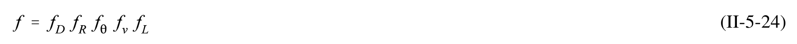 |
| 25 | II-5-25 | agreed | $$P[N=n] = \frac{e^{-\lambda T}(\lambda T)^n}{n!}$$ | 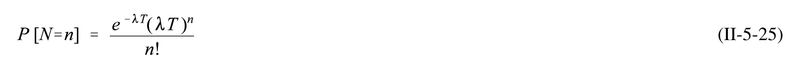 |
| 26 | II-5-26 | agreed | $$T _ { n } \, = \, { \frac { 2 l _ { B } } { n { \sqrt { g h } } } }$$ | 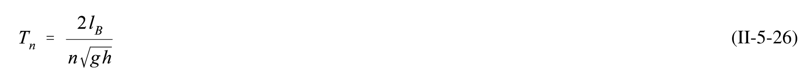 |
| 27 | II-5-27 | agreed | $$T _ { n } \, = \, { \frac { 4 l _ { B } } { \left( 1 \, + \, 2 n \right) { \sqrt { g h } } } }$$ | 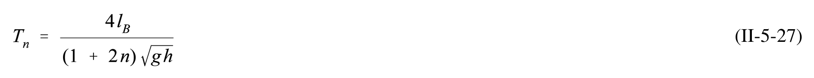 |